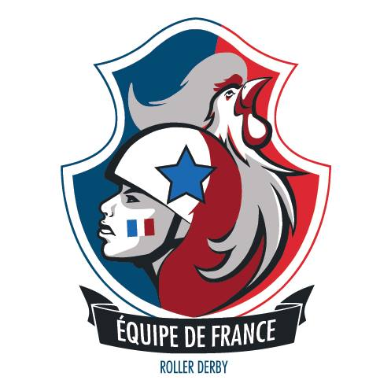
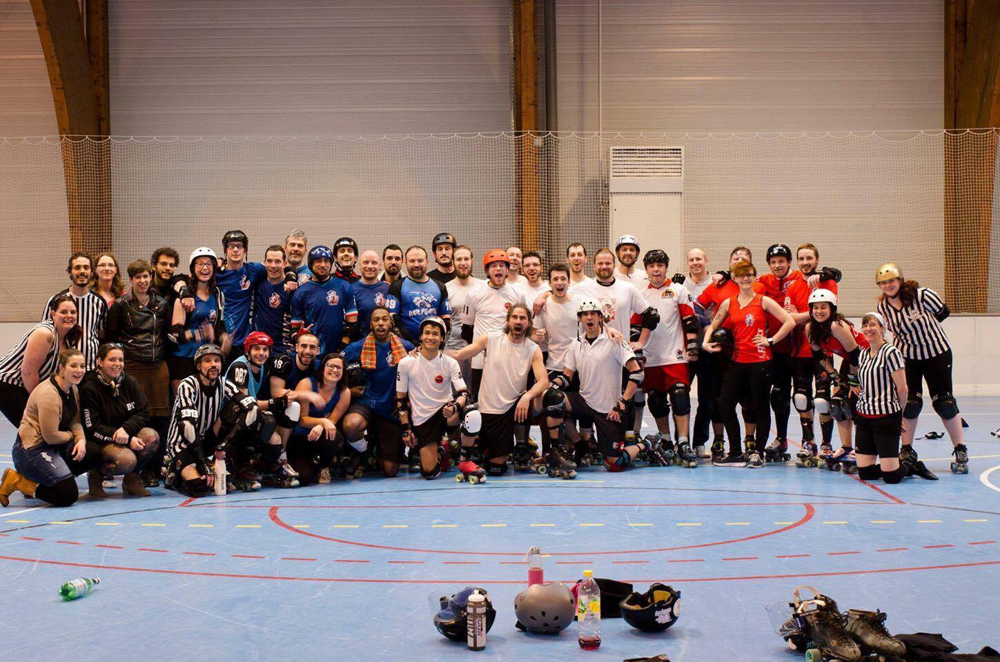

MRDWC 2016 Team Review: Equipe de France de Roller Derby Masculine
Equipe de France de Roller Derby Masculine – aka Team France – proved to be one of the most popular squads at the 2014 World Cup - finishing fourth and winning a lot of hearts.

They triumphed in a memorable game over Argentina, and were narrowly pipped in the semi-final and then the third-place play-off, so hopes are high that they can repeat their heroics in Calgary.
We caught up with Jammer Coach and Line-Up Manager Pepe le Punch - aka Laura Sanchez – for the latest from the French camp.
* How was your selection process for this year's World Cup compared to 2014? Did you find there were different factors you were looking for in skaters?
The biggest difference for the selection this year was that it happened more than a year before the World Cup. We also had a lot more skaters trying out so we did two different try-out sessions (one north and one south).
In 2014, the selections were done six months before and a group of around 30 skaters were selected to train. This year, we picked around 30 skaters as well, but they trained together for over a year, forming a very tight team. The most important factors for the coaching staff are adaptability and teamwork (in addition, of course, to individual skills).
* It's fair to say that Team France were one of the most popular teams at the 2014 World Cup and one of the most successful - finishing fourth. France won all three group games, triumphed in a memorable game over Argentina and were narrowly pipped in the semi-final and then the third-place play-off. What did you learn from the 2014 World Cup?
The coaching staff are all new for this World Cup, but all four of us were players at the women's World Cup - so we had the opportunity to experience what the players have and will be experiencing. This is a big strength for us.
The players who were at the last World Cup had the opportunity to experience high-level derby and tournament settings. The level has risen a lot since the last world cup and we are mostly focusing on our game play in order to bring the best team possible.
* How has the team been fundraising for the trip to Canada?
We did a Crowdfunding campaign that ended recently and we are selling merch.
* How are you finding your team training in the run up to the World Cup? With only a few weeks left, how is that affecting your training schedule?
We announced our 20-player roster in early March, but continued training with the full training squad plus some players that we called up as sparring partners.

Equipe de France de Roller Derby Masculine - photo by Mickael Boitel
We train all together once a month for a full weekend. Training is going well - we learned a lot from the 4 Nations tournament and are adjusting our strategies to be the best we can!
We have four days of training planned in July with only the 20 Calgary players in order to take care of details in our defence and offence. So far, I would say we are looking pretty good :-)
* You have a pretty mixed group at Calgary - including Australia, Belgium, Netherlands and Puerto Rico. Is there anyone you are really excited to play against in your group?
We are excited to play everybody. It is true that this group is a bit mixed, but we are not under-estimating anyone. We will be facing two non-European teams and will have to adapt very quickly to different blocking/jamming styles. I think this is a very interesting, open group. I honestly couldn't tell you for sure who will place 1st or 2nd. The one thing I can say is that we are hungry and ready to take on everyone in the group!
* Do you have any specific aims for Calgary that you are willing to share with us? (We're okay if there are any closely guarded secrets you don't want to give up yet!)
Well … :-) All I can say is our main goal is to play OUR game every single time. The players have spent a lot of time and energy to create strategies that work for us so we won't let other teams impose their game play on us.
- Equipe de France de Roller Derby Masculine's first bout is against Puerto Rico at 10am Calgary-local-time on Thursday on Track 2, followed by the Netherlands at 7pm on Track 2. The official MRDWC schedule is located here